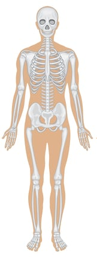
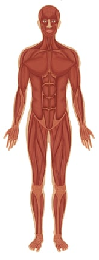
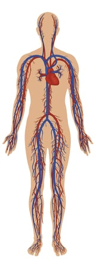
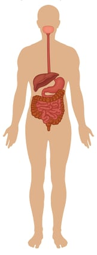
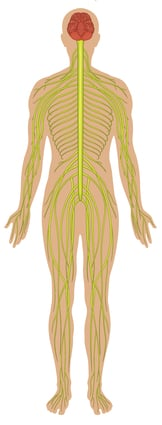
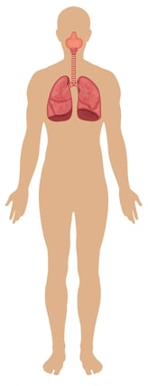
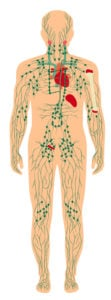

Anatomi Tubuh Manusia
1. Sistem Rangka
Tubuh manusia didukung oleh sistem rangka, yang terdiri dari 206 tulang yang dihubungkan oleh tendon, ligamen, dan tulang rawan. Tulang ini disusun oleh kerangka aksial dan kerangka apendikular.
Kerangka aksial terdiri dari 80 tulang yang terletak di sepanjang sumbu tubuh manusia. Kerangka aksial terdiri dari tengkorak, tulang telinga tengah, tulang hyoid, tulang rusuk, dan tulang belakang.
Kerangka apendikular terdiri dari 126 tulang yang merupakan tulang-tulang pelengkap yang menghubungkan kerangka aksial. Kerangka apendikular terletak di daerah tungkai atas, tungkai bawah, panggul, dan bahu.
Fungsi sistem rangka untuk bergerak, menopang dan memberikan bentuk tubuh, melindungi organ-organ dalam, serta sebagai tempat melekatnya otot-otot.
2. Sistem Otot
Sistem otot terdiri dari sekitar 650 otot yang membantu pergerakan, aliran darah, dan fungsi tubuh lainnya. Ada tiga jenis otot yaitu otot rangka yang terhubung dengan tulang, otot polos yang ditemukan di dalam organ pencernaan, dan otot jantung yang ditemukan di jantung dan membantu memompa darah.
3. Sistem Peredaran Darah
Sistem peredaran darah terdiri dari jantung, pembuluh darah, dan sekitar 5 liter darah yang dibawa oleh pembuluh darah. Sistem peredaran darah didukung oleh jantung, yang hanya seukuran kepalan tangan tertutup. Bahkan pada saat istirahat, rata-rata jantung dengan mudah memompa lebih dari 5 liter darah ke seluruh tubuh setiap menitnya. Sistem peredaran darah memiliki tiga fungsi utama yaitu:
Mengedarkan darah ke seluruh tubuh. Darah memberikan nutrisi penting dan oksigen dan menghilangkan limbah dan karbon dioksida untuk dikeluarkan dari tubuh. Hormon diangkut ke seluruh tubuh melalui cairan plasma darah.
Melindungi tubuh melalui sel darah putih dengan melawan patogen (kuman) yang telah masuk ke dalam tubuh. Trombosit berfungsi untuk menghentikan perdarahan saat luka dan mencegah patogen memasuki tubuh. Darah juga membawa antibodi yang memberi kekebalan spesifik pada patogen yang sebelumnya telah terpapar tubuh atau telah divaksinasi.
Mempertahankan homeostasis (keseimbangan kondisi tubuh) pada beberapa kondisi internal. Pembuluh darah membantu menjaga suhu tubuh yang stabil dengan mengendalikan aliran darah ke permukaan kulit.
4. Sistem Pencernaan
Sistem pencernaan adalah sekelompok organ yang bekerja untuk menerima makanan, mengubah dan memproses makanan menjadi energi, menyerap zat gizi yang terdapat pada makanan ke aliran darah, serta membuang sisa makanan yang tersisa atau tidak dapat dicerna oleh tubuh.
Makanan melewati saluran pencernaan yang terdiri dari rongga mulut, faring (tenggorokan), laring (kerongkongan), lambung, usus halus, usus besar, dan berakhir di anus.
Selain saluran pencernaan, ada beberapa organ aksesori penting dalam anatomi tubuh manusia yang membantu mencerna makanan. Organ aksesori dari sistem pencernaan meliputi gigi, lidah, kelenjar ludah, hati, kantong empedu, dan pankreas.
5. Sistem Endokrin
Sistem endokrin terdiri dari beberapa kelenjar yang mengeluarkan hormon ke dalam darah. Kelenjar-kelenjar ini termasuk hipotalamus, kelenjar pituitari, kelenjar pineal, kelenjar tiroid, kelenjar paratiroid, kelenjar adrenal, pankreas, dan kelenjar kelamin (gonad).
Kelenjar dikendalikan secara langsung oleh rangsangan dari sistem saraf dan juga oleh reseptor kimiawi dalam darah dan hormon yang diproduksi oleh kelenjar lain. Dengan mengatur fungsi organ dalam tubuh, kelenjar ini membantu menjaga homeostasis tubuh. Metabolisme seluler, reproduksi, perkembangan seksual, homeostasis gula dan mineral, denyut jantung, dan pencernaan merupakan salah satu dari banyak proses yang diatur oleh hormon.
6. Sistem Saraf
Sistem saraf terdiri dari otak, sumsum tulang belakang, organ sensorik, dan semua saraf yang menghubungkan organ-organ ini dengan bagian tubuh lainnya. Organ-organ ini bertanggung jawab atas kendali tubuh dan komunikasi di antara bagian-bagiannya.
Otak dan sumsum tulang belakang membentuk pusat kontrol yang dikenal sebagai sistem saraf pusat. Saraf sensorik dan organ indra dari sistem saraf perifer memantau kondisi di dalam dan di luar tubuh dan mengirimkan informasi sistem saraf pusat. Saraf eferen di sistem saraf perifer membawa sinyal dari pusat kendali ke otot, kelenjar, dan organ untuk mengatur fungsinya.
7. Sistem Pernapasan
Sel-sel tubuh manusia membutuhkan aliran oksigen untuk tetap hidup. Sistem pernapasan menyediakan oksigen ke sel tubuh sambil mengeluarkan karbon dioksida dan produk limbah yang bisa mematikan jika dibiarkan menumpuk.
Ada tiga bagian utama dari sistem pernapasan: saluran napas, paru-paru, dan otot-otot respirasi. Saluran napas meliputi hidung, mulut, faring, laring, trakea, bronkus, dan bronkiolus. Saluran ini membawa udara melewati hidung menuju paru-paru.
Paru-paru berfungsi sebagai organ utama sistem pernapasan dengan pertukaran oksigen ke dalam tubuh dan karbon dioksida keluar dari tubuh. Otot respirasi, termasuk diafragma dan otot interkostal, bekerja sama untuk memompa, mendorong udara masuk dan keluar dari paru-paru saat bernapas.
8. Sistem Kekebalan Tubuh
Sistem kekebalan tubuh adalah pertahanan tubuh terhadap bakteri, virus, dan patogen lainnya yang mungkin berbahaya, dengan menjaga dan menyerang dari patogen-patogen tersebut. Ini termasuk kelenjar getah bening, limpa, sumsum tulang, limfosit (termasuk sel B dan sel T), timus, dan leukosit, yang merupakan sel darah putih.
9. Sistem Limfatik
Dalam anatomi tubuh mansia, sistem limfatik mencakup kelenjar getah bening, saluran getah bening, dan pembuluh getah bening, dan juga berperan dalam pertahanan tubuh. Tugas utamanya adalah membuat dan memindahkan getah bening, cairan bening yang mengandung sel darah putih, yang membantu tubuh melawan infeksi. Sistem limfatik juga menghilangkan kelebihan cairan getah bening dari jaringan tubuh, dan mengembalikannya ke darah.
10. Sistem Ekskresi dan Urinaria
Sistem ekskresi mengeluarkan zat sisa yang tidak dibutuhkan lagi oleh manusia. Pada anatomi tubuh manusia, organ-organ ekskresi terdiri dari ginjal, hati, kulit, dan paru-paru.
Sistem urinaria atau perkemihan termasuk ke dalam sistem eksresi yang terdiri dari ginjal, ureter, kandung kemih, dan uretra. Ginjal menyaring darah untuk membuang limbah dan menghasilkan urine. Ureter, kandung kemih, dan uretra bersama-sama membentuk saluran kemih, yang berfungsi sebagai sistem untuk mengalirkan urine dari ginjal, menyimpannya, dan kemudian melepaskannya saat buang air kecil.
Selain menyaring dan menghilangkan limbah dari tubuh, sistem urinaria juga mempertahankan homeostasis air, ion, pH, tekanan darah, kalsium, dan sel darah merah.
Organ hati berfungsi mengeluarkan empedu, kulit berfungsi mengeluarkan keringat, sedangkan paru-paru berfungsi dalam mengeluarkan uap air dan karbon dioksida.
11. Sistem Reproduksi
Sistem reproduksi memungkinkan manusia untuk bereproduksi. Sistem reproduksi pria mencakup penis dan testis, yang menghasilkan sperma.
Sistem reproduksi wanita terdiri dari vagina, rahim dan ovarium, yang menghasilkan ovum (sel telur). Selama pembuahan, sel sperma bertemu dengan sel telur di tuba falopi. Kedua sel tersebut kemudian melakukan pembuahan yang ditanamkan dan tumbuh di dinding rahim. Bila tidak dibuahi, dinding rahim yang telah menebal untuk mempersiapkan kehamilan akan luruh menjadi menstruasi.
12. Sistem Integumen
Kulit atau sistem integumen adalah organ terbesar dalam anatomi tubuh manusia. Sistem ini melindungi dari dunia luar, dan merupakan pertahanan pertama tubuh melawan bakteri, virus dan patogen lainnya. Kulit juga membantu mengatur suhu tubuh dan menghilangkan limbah zat sisa melalui keringat. Selain kulit, sistem integumen meliputi rambut dan kuku.